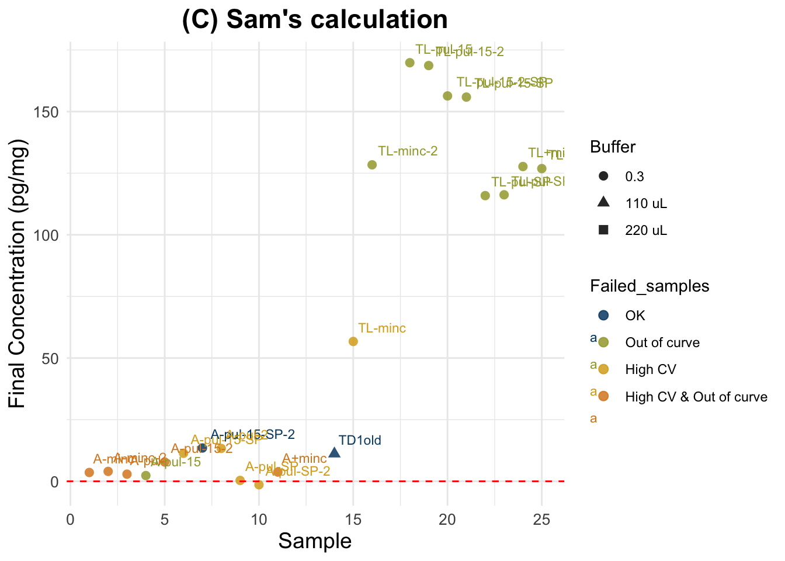

Last updated: 2025-06-09
Checks: 6 1
Knit directory:
HairCort-Evaluation-Nist2020/
This reproducible R Markdown analysis was created with workflowr (version 1.7.1). The Checks tab describes the reproducibility checks that were applied when the results were created. The Past versions tab lists the development history.
The R Markdown is untracked by Git. To know which version of the R
Markdown file created these results, you’ll want to first commit it to
the Git repo. If you’re still working on the analysis, you can ignore
this warning. When you’re finished, you can run
wflow_publish to commit the R Markdown file and build the
HTML.
Great job! The global environment was empty. Objects defined in the global environment can affect the analysis in your R Markdown file in unknown ways. For reproduciblity it’s best to always run the code in an empty environment.
The command set.seed(20241016) was run prior to running
the code in the R Markdown file. Setting a seed ensures that any results
that rely on randomness, e.g. subsampling or permutations, are
reproducible.
Great job! Recording the operating system, R version, and package versions is critical for reproducibility.
Nice! There were no cached chunks for this analysis, so you can be confident that you successfully produced the results during this run.
Great job! Using relative paths to the files within your workflowr project makes it easier to run your code on other machines.
Great! You are using Git for version control. Tracking code development and connecting the code version to the results is critical for reproducibility.
The results in this page were generated with repository version 774111e. See the Past versions tab to see a history of the changes made to the R Markdown and HTML files.
Note that you need to be careful to ensure that all relevant files for
the analysis have been committed to Git prior to generating the results
(you can use wflow_publish or
wflow_git_commit). workflowr only checks the R Markdown
file, but you know if there are other scripts or data files that it
depends on. Below is the status of the Git repository when the results
were generated:
Ignored files:
Ignored: .DS_Store
Ignored: .RData
Ignored: .Rhistory
Ignored: analysis/.DS_Store
Ignored: analysis/.Rhistory
Ignored: analysis/figure/
Ignored: data/.DS_Store
Ignored: data/Test3/.DS_Store
Ignored: data/Test4/.DS_Store
Untracked files:
Untracked: ELISA_Analysis_FinalVals_test5 2.Rmd
Untracked: ELISA_Analysis_FinalVals_test5.Rmd
Untracked: ELISA_Analysis_RawVals_test5.Rmd
Untracked: ELISA_Calc_FinalVals_test5.Rmd
Untracked: ELISA_QC_test5.Rmd
Untracked: analysis/ELISA_Analysis_FinalVals_test6.Rmd
Untracked: analysis/ELISA_Analysis_RawVals_test6.Rmd
Untracked: analysis/ELISA_Calc_FinalVals_test6.Rmd
Untracked: analysis/ELISA_QC_test6.Rmd
Untracked: data/Test6/
Unstaged changes:
Modified: data/Test3/sample_info_test3_091524.csv
Modified: data/Test4/myassays_table_test4_021925.csv
Modified: data/Test5/layout_wells_test5_051325.csv
Note that any generated files, e.g. HTML, png, CSS, etc., are not included in this status report because it is ok for generated content to have uncommitted changes.
There are no past versions. Publish this analysis with
wflow_publish() to start tracking its development.
Cortisol value calculations
| Min. | 1st Qu. | Median | Mean | 3rd Qu. | Max. | NA’s | |
|---|---|---|---|---|---|---|---|
| A) Standard Method (mult. by sample dilution) | |||||||
| B) Spike-Corrected Method (Nist 2020) | |||||||
| C) Spike-Corrected (Sam’s Method) |
Plate description
| Category | Description |
|---|---|
| TF | Non-spiked serial dilution |
| TG | Spiked only in first dilution (TG1) then serially diluted |
| -SP | Each dilution individually spiked with 25 µL of std1 |
Results:
Intra-assay CV: – %
Intra-assay CV after removing low quality samples: –%
Inter-assay CV: – (Bindings for 20mg sample diluted in 250 uL, no spike: 64.8% and 48% in test3 and test4, respectively)
Conclusions:
Concerns: Overall quality of the plate is not great, but serial dilusions show clear parallelism and standards have values within the expected
Ave_Conc_pg/ml: average ELISA reading per sample in pg/mL
Weight_mg: hair weight in mg
Buffer_nl: assay buffer volume in nL → we convert to mL
Spike: binary indicator (1 = spiked sample)
SpikeVol_uL: volume of spike added in µL
Dilution: dilution factor (already present)
Vol_in_well.tube_uL: total volume in well/tube in µL (for spike correction)
std: standard reading value
extraction: methanol volume ratio = vol added / vol recovered (e.g. 1.2/1 ml)
[1] "./data/Test6/Data_QC_flagged.csv"Parameters and unit transformations:
# Volume of methanol used for cortisol extraction varies, so it is included in file
# as Extraction_ratio (vol added / vol recovered) in mL
# Reading of spike standard and conversion to ug/dl
std <- 3200 # test 6 backfit [FAKE]
std_ul.dl <- std / 10000 # std in ul/dl
# Creating variables in indicated units
df$Buffer_ml <- c(df$Buffer_nl/1000) # dilution (buffer)
df$Ave_Conc_ug.dl <- c(df$Ave_Conc_pg.ml/10000) # Transform to μg/dl from assay outputIdentify and flag bad quality samples
ABOVE 80% binding HIGH CV HIGH CV;ABOVE 80% binding
1 7 6
OK UNDER 20% binding
57 11 Summary CV for all samples: Min. 1st Qu. Median Mean 3rd Qu. Max. NA's
0.2320 0.6158 23.6000 33.5168 61.8500 111.0000 58 Summary CV for good quality samples only: Min. 1st Qu. Median Mean 3rd Qu. Max. NA's
5.31 5.31 5.31 5.31 5.31 5.31 56 Formula:
((A/B) * (C/D) * E * 10,000) = F
##################################
##### Calculate final values #####
##################################
data$Final_pg.mg_A <- c(
((data$Ave_Conc_ug.dl / data$Weight_mg) * # A/B *
data$Extraction_ratio * # C/D *
data$Buffer_ml * 10000)) # E * 10000 Summary of all samples (n = 25 ): Min. 1st Qu. Median Mean 3rd Qu. Max. NA's
2.325 7.919 25.234 68.023 127.491 169.820 3 Summary for good quality samples only (n = 2 ): Min. 1st Qu. Median Mean 3rd Qu. Max.
22.89 23.75 24.60 24.60 25.46 26.31 We followed the procedure described in Nist et al. 2020:
“Thus, after pipetting 25μL of standards and samples into the appropriate wells of the 96-well assay plate, we added 25μL of the 0.333ug/dL standard to all samples, resulting in a 1:2 dilution of samples. The remainder of the manufacturer’s protocol was unchanged. We analyzed the assay plate in a Powerwave plate reader (BioTek, Winooski, VT) at 450nm and subtracted background values from all assay wells. In the calculations, we subtracted the 0.333ug/dL standard reading from the sample readings. Samples that resulted in a negative number were considered nondetectable. We converted cortisol levels from ug/dL, as measured by the assay, to pg/mg—based on the mass of hair collected and analyzed using the following formula:
A/B * C/D * E * 10,000 * 2 = F
where
##################################
##### Calculate final values #####
##################################
# spike is already divided by 10000 (unit is ug/dL)
data$Final_pg.mg_B <-
ifelse(
data$Spike == 1, ## Only spiked samples
((data$Ave_Conc_ug.dl - (std_ul.dl)) / # (A-spike)
data$Weight_mg) # / B
* data$Extraction_ratio * # C / D
data$Buffer_ml * 10000 * 2, # E * 10000 * 2
data$Final_pg.mg_A
)Summary all samples: Min. 1st Qu. Median Mean 3rd Qu. Max. NA's
-130.883 2.465 10.584 39.810 127.491 169.820 3 Summary good quality samples only: Min. 1st Qu. Median Mean 3rd Qu. Max.
-126.582 -95.223 -63.863 -63.863 -32.504 -1.144 Simplifies unnecessary unit transformations and accounts for spike considering dilution of both sample and the spike
Step 1: Calculate contribution of spike
X * Y / Z / SPd = SP
# Transforming units
data$SpikeVol_ml <- data$SpikeVol_ul/1000 # X to mL
data$Vol_in_well.tube_ml <- data$Vol_in_well.tube_ul/1000 # Z to mL
# Calculate spike contribution to each sample
## ( Spike vol. x Spike Conc.)
## ------------------------ / dilution = Spike contribution (pg/ml)
## Total vol.
# Calculate cort contribution of spike to each sample
data$Spike_contribution <- ((data$SpikeVol_ml * std / # X * Y
data$Vol_in_well.tube_ml) / # Z /
data$Dilution_spike) # SPThe reading for standard 1 in this plate is 3200The total contribution of the Spike to each sample is can be any of the following numbers (in pg/ml)[1] 0.0000 457.1429 1600.0000Step 2 : Substract spike and calculate final values
((A - SP)/B) * (C/D) * E = F
##################################
##### Calculate final values #####
##################################
data$Final_pg.mg_C <-
(((data$Ave_Conc_pg.ml - data$Spike_contribution)) / # (A - spike)
data$Weight_mg) * # / B *
data$Extraction_ratio * # C / D *
data$Buffer_ml # E Summary for all samples: Min. 1st Qu. Median Mean 3rd Qu. Max. NA's
-1.41 3.81 13.42 63.42 127.49 169.82 3 Summary for good quality samples only: Min. 1st Qu. Median Mean 3rd Qu. Max.
11.16 11.75 12.34 12.34 12.92 13.51 | Sample | Final_pg.mg_A | Final_pg.mg_B | Final_pg.mg_C | Spike_contribution | Binding.Perc | SpikeVol_ul | Dilution_sample | Dilution_spike | Extraction_ratio | |
|---|---|---|---|---|---|---|---|---|---|---|
| 20 | TL-pul-15-2-SP | 169.148 | 159.096 | 156.348 | 457.1429 | 0.473 | 50 | 1 | 1 | 1.4 |
| 21 | TL-pul-15-SP | 168.672 | 158.144 | 155.872 | 457.1429 | 0.559 | 50 | 1 | 1 | 1.4 |
| 22 | TL-pul-SP | 125.496 | 116.592 | 115.896 | 457.1429 | 0.817 | 50 | 1 | 1 | 1.4 |
| 23 | TL-pul-SP-2 | 125.832 | 117.264 | 116.232 | 457.1429 | 0.731 | 50 | 1 | 1 | 1.4 |
| 24 | TL+minc | 127.701 | 127.701 | 127.701 | 0.0000 | 0.258 | 0 | 1 | 1 | 1.4 |
| 25 | TL+minc-2 | 126.861 | 126.861 | 126.861 | 0.0000 | 0.473 | 0 | 1 | 1 | 1.4 |
Final cortisol concentrations not accounting for spike. Tags are sample numbers.
Expected results: a straight horizontal line showing that I obtained same cortisol concentration value in the Y axis, across different sample weights.
Final cortisol concentrations accounting for Spike as instructed in Nist et al. 2020.
Expected results: lower values than in the previous plot for the spiked samples, but not as low as negative samples (for all of them). Spiked and non-spiked samples should be aligned (same concentration across different weights)
Final cortisol concentration values using new method.
Expected results: one unique horizontal line, regardless of the spiking status and dilution.

Warning: Removed 4 rows containing non-finite outside the scale range
(`stat_smooth()`).Warning: Removed 4 rows containing missing values or values outside the scale range
(`geom_point()`).Warning: Removed 4 rows containing missing values or values outside the scale range
(`geom_text()`).Warning: Removed 9 rows containing missing values or values outside the scale range
(`geom_smooth()`).Warning: Removed 1 row containing missing values or values outside the scale range
(`geom_hline()`).Warning: Removed 1 row containing missing values or values outside the scale range
(`geom_text()`).`geom_smooth()` using formula = 'y ~ x'Warning: Removed 3 rows containing non-finite outside the scale range
(`stat_smooth()`).Warning in qt((1 - level)/2, df): NaNs produced
Warning in qt((1 - level)/2, df): NaNs produced
Warning in qt((1 - level)/2, df): NaNs produced
Warning in qt((1 - level)/2, df): NaNs produced
Warning in qt((1 - level)/2, df): NaNs produced
Warning in qt((1 - level)/2, df): NaNs produced
Warning in qt((1 - level)/2, df): NaNs produced
Warning in qt((1 - level)/2, df): NaNs produced
Warning in qt((1 - level)/2, df): NaNs produced
Warning in qt((1 - level)/2, df): NaNs producedWarning: Removed 3 rows containing missing values or values outside the scale range
(`geom_point()`).Warning: Removed 3 rows containing missing values or values outside the scale range
(`geom_text()`).Warning in max(ids, na.rm = TRUE): no non-missing arguments to max; returning
-Inf
Warning in max(ids, na.rm = TRUE): no non-missing arguments to max; returning
-Inf
Warning in max(ids, na.rm = TRUE): no non-missing arguments to max; returning
-Inf
Warning in max(ids, na.rm = TRUE): no non-missing arguments to max; returning
-Inf
Warning in max(ids, na.rm = TRUE): no non-missing arguments to max; returning
-Inf
Warning in max(ids, na.rm = TRUE): no non-missing arguments to max; returning
-Inf
Warning in max(ids, na.rm = TRUE): no non-missing arguments to max; returning
-Inf
Warning in max(ids, na.rm = TRUE): no non-missing arguments to max; returning
-Inf
Warning in max(ids, na.rm = TRUE): no non-missing arguments to max; returning
-Inf
Warning in max(ids, na.rm = TRUE): no non-missing arguments to max; returning
-InfWarning: Removed 1 row containing missing values or values outside the scale range
(`geom_hline()`).Number of good quality datapoints: 2Models used with respect to weight:
lm(Final.pg.mg_C ~ Weight_mg,
data = data2.hq)Error using good quality samples only
Mean Absolute Error (MAE) ALL: 0 Standard Deviation of Residuals ALL: 0 Error using all samples
Mean Absolute Error (MAE) ALL: 61.418 Standard Deviation of Residuals ALL: 65.857
sessionInfo()R version 4.5.0 (2025-04-11)
Platform: aarch64-apple-darwin20
Running under: macOS Sequoia 15.5
Matrix products: default
BLAS: /Library/Frameworks/R.framework/Versions/4.5-arm64/Resources/lib/libRblas.0.dylib
LAPACK: /Library/Frameworks/R.framework/Versions/4.5-arm64/Resources/lib/libRlapack.dylib; LAPACK version 3.12.1
locale:
[1] en_US.UTF-8/en_US.UTF-8/en_US.UTF-8/C/en_US.UTF-8/en_US.UTF-8
time zone: America/Detroit
tzcode source: internal
attached base packages:
[1] stats graphics grDevices utils datasets methods base
other attached packages:
[1] here_1.0.1 knitr_1.50 dplyr_1.1.4 paletteer_1.6.0
[5] broom_1.0.8 ggplot2_3.5.2
loaded via a namespace (and not attached):
[1] sass_0.4.10 generics_0.1.3 tidyr_1.3.1 prismatic_1.1.2
[5] lattice_0.22-6 stringi_1.8.7 digest_0.6.37 magrittr_2.0.3
[9] evaluate_1.0.3 grid_4.5.0 fastmap_1.2.0 Matrix_1.7-3
[13] rprojroot_2.0.4 workflowr_1.7.1 jsonlite_2.0.0 backports_1.5.0
[17] rematch2_2.1.2 promises_1.3.2 mgcv_1.9-1 purrr_1.0.4
[21] scales_1.3.0 jquerylib_0.1.4 cli_3.6.4 rlang_1.1.6
[25] munsell_0.5.1 splines_4.5.0 withr_3.0.2 cachem_1.1.0
[29] yaml_2.3.10 tools_4.5.0 colorspace_2.1-1 httpuv_1.6.16
[33] vctrs_0.6.5 R6_2.6.1 lifecycle_1.0.4 git2r_0.36.2
[37] stringr_1.5.1 fs_1.6.6 pkgconfig_2.0.3 pillar_1.10.2
[41] bslib_0.9.0 later_1.4.2 gtable_0.3.6 glue_1.8.0
[45] Rcpp_1.0.14 xfun_0.52 tibble_3.2.1 tidyselect_1.2.1
[49] rstudioapi_0.17.1 farver_2.1.2 nlme_3.1-168 htmltools_0.5.8.1
[53] rmarkdown_2.29 labeling_0.4.3 compiler_4.5.0